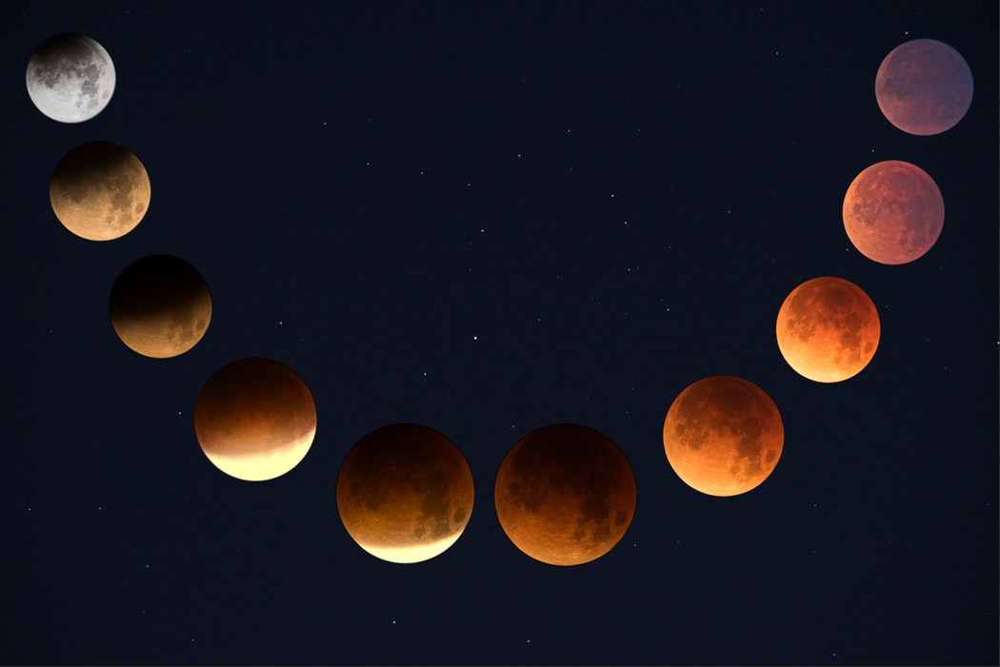
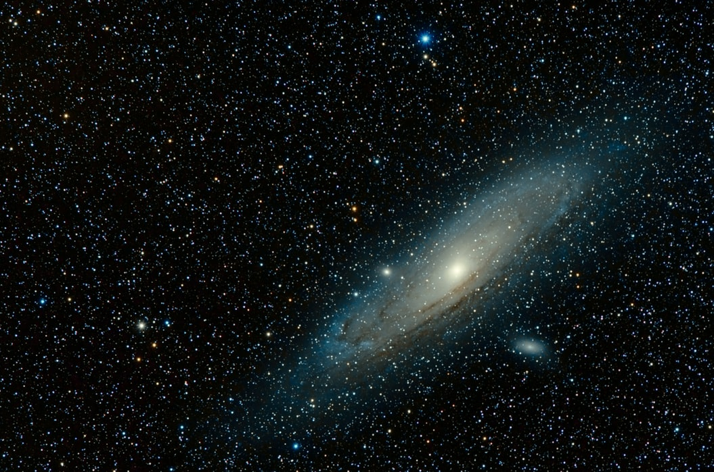

SPACE
The Never Ending World!
Space, also known as outer space, is the near-vacuum between celestial bodies.
It is where everything (all of the planets, stars, galaxies and other objects) is found.
On Earth, space begins at the Kármán line (100 km above sea level).
This is where Earth's atmosphere is said to stop and outer space begins.
This is not a natural boundary but is a convention used by scientists and diplomats.
1. Geospace
It is the region of outer space near EarthGeospace includes the upper region of the atmosphere and the magnetosphere.The Van Allen radiation belt lies within the geospace.
The space inside the magnetosphere is protected from radiation from the Sun. It has a low level of electrically charged particles.
2 . Interplanetary space
It is the space around the Sun and planets of the Solar System.It has the solar wind, a continuous stream of charged particles from the Sun. This stream
creates a very thin atmosphere (the heliosphere) for billions of miles or kilometers into space.
Interplanetary space has the magnetic field generated by the Sun.
Planets such as Jupiter, Saturn, Mercury and the Earth also have magnetospheres.
These magnetic fields can trap particles from the solar wind and other sources, creating belts of magnetic particles such as the Van Allen radiation belt.
Planets without magnetic fields, such as Mars, have their atmospheres gradually stripped off by the solar wind.
Stars
Planets
Galaxy